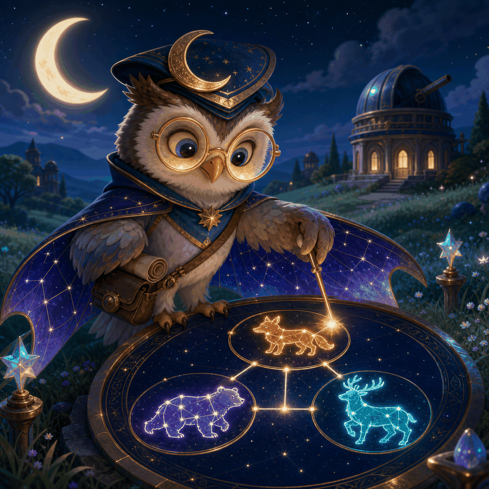

How to play
- Read the two relationship rules.
- Tap the one constellation board that fits both.
- A wrong choice stays visible so you can calmly try again.

Read two sky rules, choose the only animal constellation that obeys them, and restore the night maps.
Best checks: Not yet
Compare two position clues with three 3×3 animal boards and choose the arrangement that satisfies both.
Six arcs contain five maps each, for 30 authored maps. Clearing a map unlocks the next one; checkpoints at maps 5, 10, 15, 20, 25, and 30 mark the end of each arc.
Each map shows a 3×3 board, three candidate answers, and two visible relation clues. Treat above, below, left, right, and diagonal positions literally before choosing.
Progress and the best total checks are stored only in this browser when storage is available. There is no account or cloud save.
This family logic puzzle has no timer or lives, and no account is needed. Progress and best total checks use this browser’s local storage when available; they do not sync to another device and may be erased if browser or site data is cleared.
Read each relation literally and compare both clues against the same candidate. A wrong choice stays visible, so you can learn from the board before trying again.